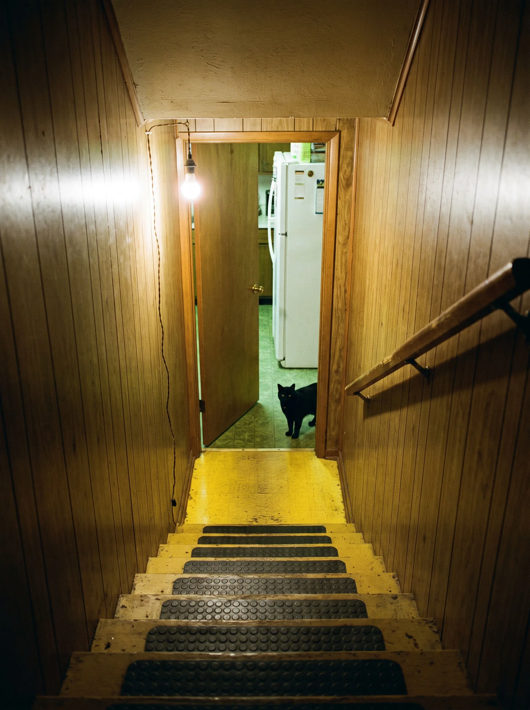

YOUR MOM'S BASEMENT Setup

A finished basement under a two family house in Queens. Wood paneling, shag, a plastic couch, the Mets on a CRT, the boiler. It is also non Euclidean. 120 NEW YORKERS hang on the walls, 20 of MLow's meme sculptures sit on the shelves, and a 12 metre everything bagel is in the back. Mom is upstairs. You will not be going upstairs.
WASD walk · SHIFT hurry · SPACE jump · drag or arrows to look · E use · click any painting · ENTER to type · C tour